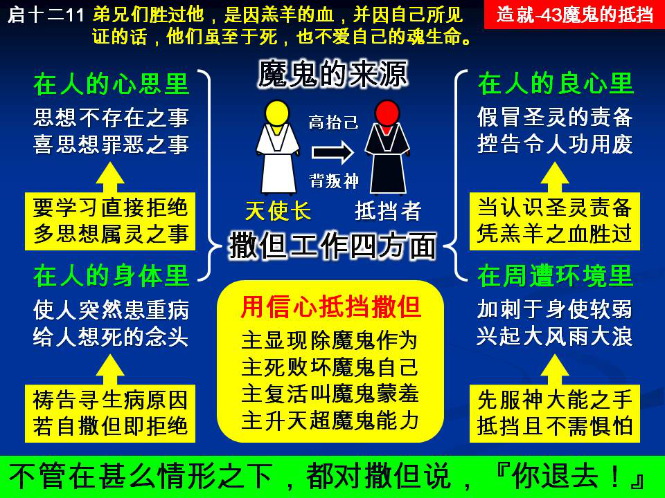

诗歌：640首、638首
重要经文：
启示录十二章11节：弟兄们胜过他，是因羔羊的血，并因自己所见证的话，他们虽至于死，也不爱自己的魂生命。
以弗所六章11节：要穿戴神全副的军装，使你们能以站住，抵挡魔鬼的诡计。
彼得前书五章8节：务要谨守、儆醒。你们的对头魔鬼，如同吼叫的狮子，遍地游行，寻找可吞吃的人。
纲目要点：
壹 撒但工作的四方面：
一 撒但作工在人的心思里。
二 撒但作工在人的身体上。
三 撒但作工在人的良心里：
１ 撒但的控告与圣灵的责备的不同。
２ 怎样胜过撒但的控告。
四 撒但作工在环境中。
贰 用信心抵挡撒但：
一 相信主的显现为要除灭魔鬼的作为。
二 相信主的死败坏魔鬼。
三 相信主的复活叫撒但蒙羞。
四 相信主的升天远超过撒但的能力。
参 不管在什么情形之下，都对撒但说，『你退去！』
信息选读：
撒但的由来与工作
魔鬼又名撒但。（启十二9。）他本来是神所创造的一个基路伯，（结二八12～14，）是当初的天使长；（启十二7，太二十五41；）后来因他想高抬自己与神同等，就背叛了神，因此受了神的审判，（赛十四12～15；结二八15～19，）就变成了撒但，成为神的仇敌。撒但在原文的意思就是抵挡者，就是仇敌。凡是神所作的事，魔鬼都在那里抵挡；凡是神的儿女，魔鬼也要想方法与他们作对。
撒但作工在人的心思里
撒但的试探，大多数是在心思里的。撒但知道，如果他明目张胆的来攻击，许多神的儿女就要坚决的起来抵挡他。所以，他来试探我们，常常是一点不惊动我们，在我们不知不觉的时候，把一个思想摆在我们的头脑里，叫我们有了这一个思想，接下去我们就自己在那里想这一个思想。你如果越想越有理由，越想越以为这一件事是对的，那你就已经上他的当了。你所接受的那个思想，就是撒但给你的试探。如果我们在心思上不受撒但的攻击，那么撒但的试探就失去了一条最容易进攻的路。神的儿女之中有许多的难处，都不是事实上的难处，而是思想上的难处。有的时候，你看见一个弟兄或姊妹，你觉得他与你有事，与你很疏远，因此你就与他有了间隔，而实际上却并没有这么一回事；这就是撒但在你的心思里作祟，撒但也在那个弟兄或姊妹的心思里作祟，结果你们之间就出了事情。其实这根本是莫须有的事。所以，神的儿女要拒绝忽然来的思想，忽然有的感觉，要学习在心思上不给撒但留地步。
怎样拒绝从撒但来的思想
撒但试探人，撒但攻击人，总是偷偷摸摸的，蹑手蹑脚的，不光明的。撒但不是大声喊说，『我来了！』他常常用撒谎和假冒的方法，使你受欺骗。撒但在我们的心思里攻击我们，就是用欺骗的方法，叫你以为这个思想是你自己要想的，其实这是他给你的。你识破了他的真相，你也就不接受他所给你的思想。抵挡的意思就是不接受。撒但给你一个思想，你说，『我不要，』这就是抵挡。他给你这一个，你说『我不要；』他给你那一个，你说『我不接受』，他就没有办法。在中世纪的时候，有一位神的仆人曾说，『你不能拦阻鸟在你头上飞过，但是至少你能拦阻鸟在你头上作窝。』
我们可以思念许多属灵的事，我们在属灵的事情上要多用心思。如果一个人常用他的心思去想倾向罪恶的事，撒但就很容易把他的思想塞进去，因为他的思想和撒但塞进去的思想差不多。如果我们常思想属灵的事，那么撒但就很不容易把他的思想注射到我们的里面来。有许多人都是因为自己被动，自己空闲，或者自己所想的东西不够清洁，都是那些不相干的事，所以撒但能有机会把他的思想摆在这些人里面。
撒但作工在人的身体上
发热乃是一个病状，主不能斥责一个病状；可是这一个热病的后面有撒但，是有位格的东西，所以主一斥责那热病，热就退了。撒但在人身体上的工作不只是叫人生病，也叫人死。撒但从起初是杀人的，像他本来是说谎的一样。（约八44。）所以，不只要抵挡魔鬼所给的疾病，也要抵挡魔鬼的凶杀。所有以为『不如死了倒好』的意念都是从撒但来的，任何以为『死了算了』的意念都是从撒但来的，凡一切想要死的意念，都是从撒但来的。撒但在约伯身上的工作就是要他想死。撒但不只向着约伯有这个意思，也向所有神的儿女有这个意思。所以，一切要自杀的意念，愿意死的意念，盼望早死的意念，都是撒但给人的试探。他试探人犯罪，他也试探人想死。就连在我们旅行的时候，所有遇险的思想，也都是撒但的试探。任何时候有这一类的思想，我们都要拒绝，不能接受。
我们不要随便指出人的失败
假定一个弟兄有某种失败，可是他还能祷告，还能读圣经，还能参加聚会，那只要你里面有把握帮助他，就能把他带过去。如果你里面没有把握，你没有力量提高他，只把他的失败指出来，那反而使他连祷告也没有了，读圣经也没有了，聚会也不参加了。将残的灯火要剔亮，不要吹灭；压伤的芦苇要扶持，不要折断。所以我们不要以自己为标准叫别人的良心受压，我们要学习不作破坏人良心的事。
需要认识主耶稣所给我们的权柄
撒但所有的就是能力，但是，主耶稣所给我们的权柄，能胜过撒但一切的能力。能力永远赶不上权柄。神将权柄交在我们手里，所以撒但必定失败。我们用一个比喻来说明权柄胜过能力。
比方在马路口有管制交通的红绿灯，警察一开红灯，行人和车辆都必须停止，谁也不可向红灯冲过去。论力量，行人和车辆比红灯大得多；可是论权柄，行人和车辆都不敢迎着它冲过去。这就是权柄制服能力。权柄制服能力，是神在宇宙中安排的基本的制度。
不管在什么情形都对撒但说，『你退去！』
我们是已经得胜了，我们是从得胜出去争战，为要保守已有的得胜；我们不是从争战去争取得胜。我们是从得胜打出去，得胜是已经在我们手里的东西。以弗所书所说的争战，乃是得胜者的打仗，不是借着争战来作得胜者。
撒但怎样试探你？撒但是要叫你忘记你自己的地位，叫你忘记你自己的得胜，或者看不见你自己的得胜。你如果接受他这样的试探，你就越过越觉得得胜离开你远，就越过越摸不着得胜。我们要记得，主耶稣的得胜是完全到一个地步，把你整个一生都包括在里面！你一信就得胜。撒但乃是己经失败的，我们乃是已经在基督里面得胜的。不管在什么情形都对撒但说，『你退去！』 （摘自初信造就第四十三篇）
课程复习：
一 请说明撒但的由来与工作。
二 你不能拦阻鸟从头上飞过，但能拦阻鸟在头上作窝是什么意思？
三 『不如死了算了』这个骗人的意念是从那里来的？
四 主耶稣所给我们的权柄与撒但有的能力有何区别？
五 你是否有对撒但说，『你退去！』的经历？
辅助图表：
